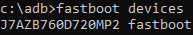

Для проверки можно ввести fastboot devices. Должно выдать серийный номер аппарата.

В процессе перепрошивки понадобится переключать слоты (ну, если устройство A/B, само собой). Для этого используется команда fastboot set_active [буква слота].
fastboot set_active a
для переключения на слот А и
fastboot set_active b
для переключения на слот B, соответственно.
-
fastboot --disable-verity --disable-verification flash vbmeta vbmeta.img
Что делает: прошивает vdmeta и отключает все проверки;
Когда используется: только 1 раз при переходе со стока на кастом.
-
fastboot -w
Что делает: форматирует раздел Data;
Когда используется: при переходе с одной прошивки на другую на одном слоте (перезапись system, грубо говоря), для фикса шифрования в TWRP (но проще через TWRP, да и нужно это было только в ZenUI).
-
fastboot flash [прошиваемый раздел] [имя файла с расширением]
Что делает: прошивает указанный раздел указанным файлом;
Когда используется: прошивка ядра, персист, GSI.
-
fastboot flash boot [имя файла с расширением]
Что делает: прошивает ядро (раздел boot) указанным файлом;
Когда используется: прошивка ядра.
-
fastboot flash boot magisk_patched.img
Что делает: прошивает ядро (раздел boot) патченным ядром магиска;
Когда используется: установка Magisk старым способом.
-
fastboot flash boot twrp.img
Что делает: прошивает ядро (раздел boot) TWRP;
Когда используется: установка TWRP.
-
fastboot flash boot 72.img
Что делает: прошивает ядро (раздел boot) сток ядром от 72 прошивки;
Когда используется: откат к сток ядру на 72 вендоре.
-
fastboot flash system [имя файла с расширением]
Что делает: прошивает раздел system указанным файлом;
Когда используется: установка GSI.
-
fastboot flash system oos.img
Что делает: прошивает раздел system окси-GSI;
Когда используется: установка OOS.
-
fastboot flash persist [имя файла с расширением]
Что делает: прошивает раздел persist указанным файлом;
Когда используется: фикс persist.
Важно: под основным понимается слот, который будет будет использоваться повседневно после всей прошивки (тот, на котором будет используемая система), не путать с тем, что напротив Active Slot в бутлоадере.
Важно: в linux не работает fastboot -w должным образом, а потому рекомендуется делать “форматировать Data” в TWRP вместо него (по сути одно и то же).